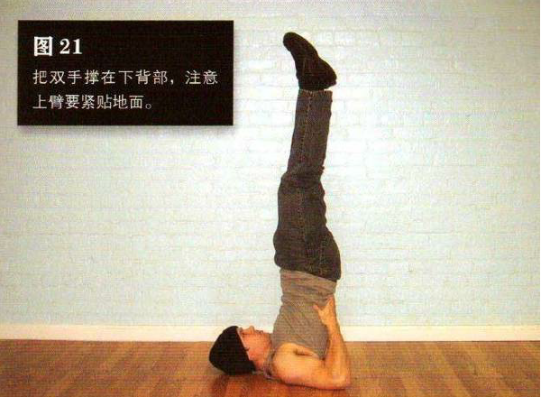
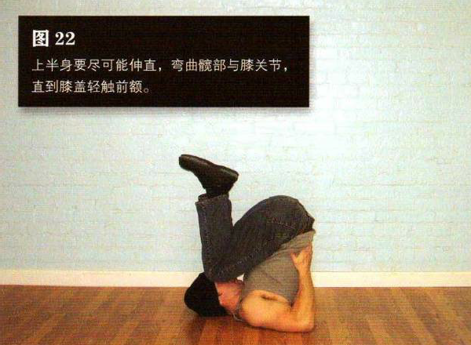

平躺，双膝弯曲，双手下压。双脚蹬离地面，直到举到空中。在将双腿举起的过程中，顺势把双手撑在下背部，注意上臂要紧贴地面。你现在摆出的姿势是肩倒立—靠双肩、上背部以及上臂支撑身体。要记住，始终用这几个部位支撑身体，不要让颈部受到压力。身体要锁定伸直，髋部不要弯曲。
上半身要尽可能伸直，弯曲髋部与膝关节，直到膝盖轻触前额，这是该动作的结束姿势。然后伸直双腿，直到身体回到起始姿势，如此重复。
第一次尝试该动作时，不是人人都能做到膝盖轻触前额。你可以在每次锻炼时试着加大动作幅度，这样你的关节很快就会得到放松。另外，有啤酒肚的人几乎无法完成这个动作，因为他的大肚子会碍事。对这类人来说，坚持空腹练习会好一些——直到他们减掉肚子上的赘肉。
初级标准：1 组，10 次
中级标准：2 组，各 25 次
高级标准：3 组，各 50 次